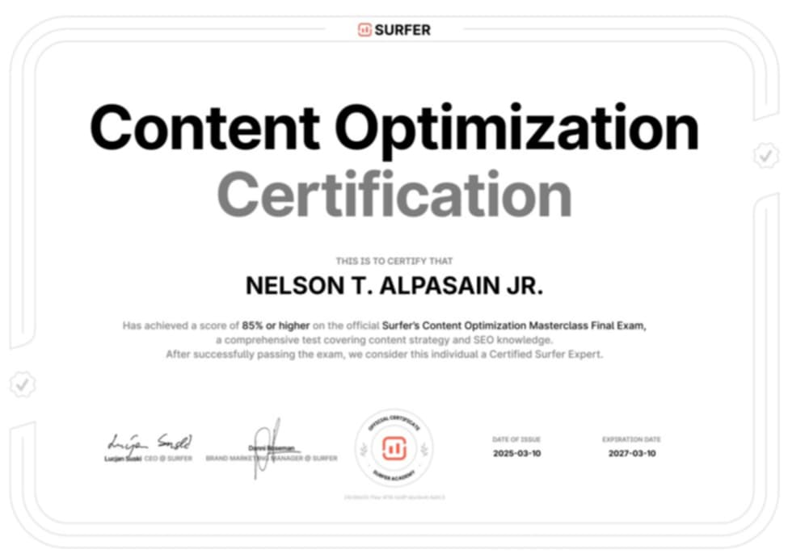
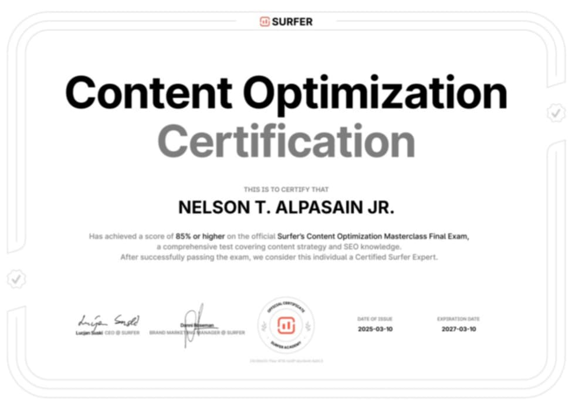
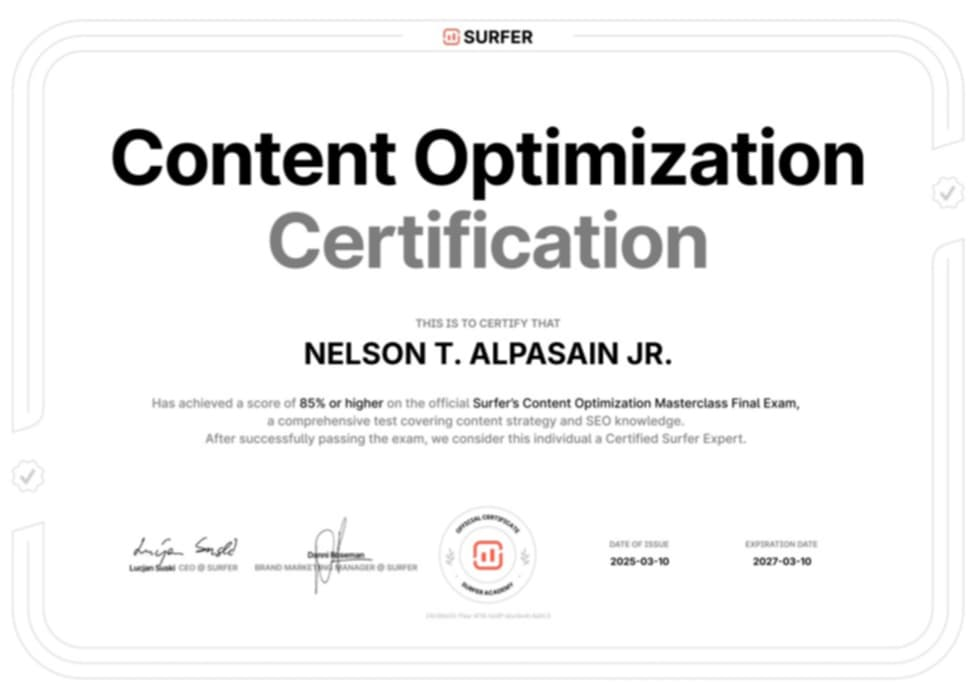

Certificates
 


Showcasing my achievements and projects
Hi, I am Nelson T. Alpasain Jr., a 3rd-year college student pursuing a Bachelor of Science in Information Technology (BSIT). I recently transferred from my previous school, Notre Dame Of Jolo College, and I’m still adjusting to my new academic environment. I chose BSIT because I have a strong interest in technology. I want to learn more about software development, hardware components, cybersecurity, website and system creation, and even game development. Some people think that IT is an easy course—that it’s just about learning how to use a computer—but they couldn’t be more wrong. Being an IT student is challenging because we deal with constantly evolving technology, and we must stay updated with new trends, innovations, and solutions. Aside from my academic interests, I also find IT fascinating because of its limitless possibilities. Technology is everywhere, and it plays a crucial role in almost every industry. Some people think criminology is a “cooler” course, but they don’t realize how important IT professionals are in law enforcement. Police agencies rely on IT specialists for cybersecurity, digital forensics, crime data analysis, and many other critical functions. It’s amazing how IT connects to different fields in ways people don’t always recognize. When I’m not studying, I enjoy playing video games, playing basketball, sleeping (a lot), and creating digital art. I also admit that I can be a lazy student sometimes—just a chill and laid-back guy! I don’t stress too much about having a love life either—HAHAHA—since I don’t have one anyway. As for my ultimate goal? I dream of becoming rich while doing nothing. Sounds impossible, right? But who knows? I’ll figure it out somehow. Until then, I’ll keep learning, improving, and enjoying life one step at a time. That’s all about me! Thanks for reading.

Check out my latest projects:
View Portfolio